Sogni di Raso · sognidiraso.com
Referência visual: notturnnomilano.com. Página nova em sogni-di-raso/index.html. Idioma da página: italiano. Este plano: português.
CONFIGURAZIONE no fim do arquivo.Quem chega de um anúncio decide em segundos se fica. Cada seção responde à próxima pergunta que essa pessoa faz, na ordem em que ela faz:
São 8 botões de compra ao longo da página, todos com o preço atualizado conforme a escolha. A barra fixa aparece quando o botão principal sai da tela e mostra o que a pessoa escolheu ("2 set · Champagne + Blu notte").
Copiei a estrutura e o ritmo das seções da referência e mantive a identidade da sua marca: ameixa, creme e dourado, Cormorant + Jost e o seu logo. Os textos foram escritos do zero. Não copiei nenhuma frase, foto ou marca da Notturno.
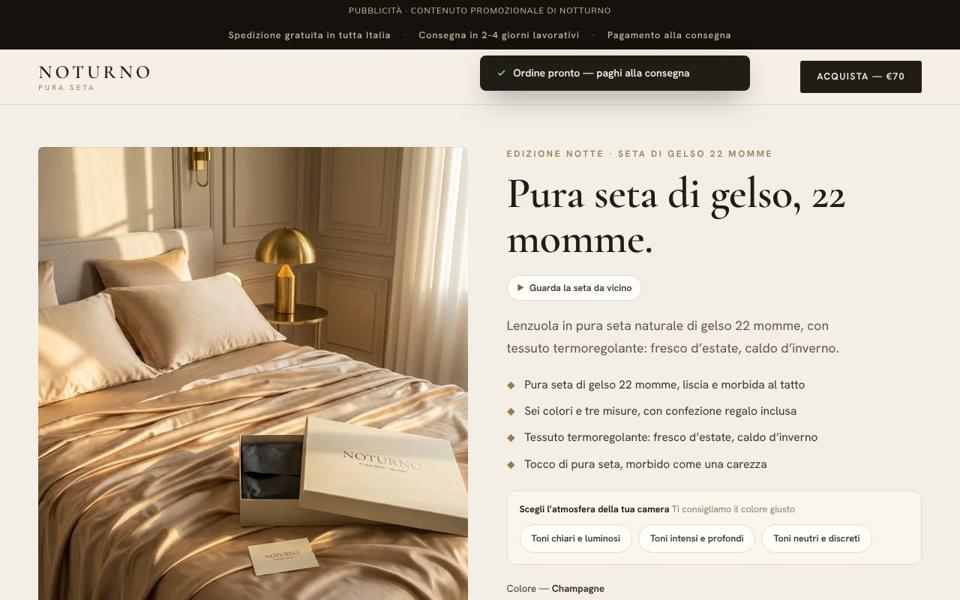
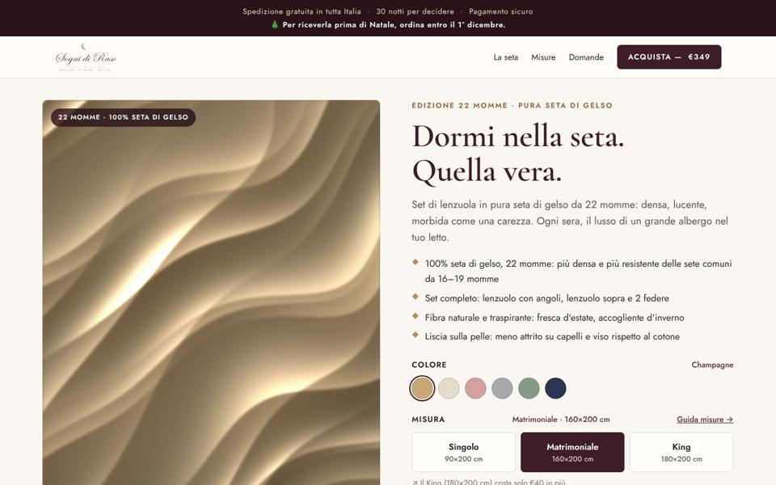
Mantive: foto à esquerda, título serifado, bullets com losango, configurador e preço grande. Melhorei: cor e medida pré-selecionadas, upsell automático ("o King custa só €40 a mais"), oferta de 2 sets com economia calculada, data de entrega real e garantia em destaque verde logo abaixo do botão.
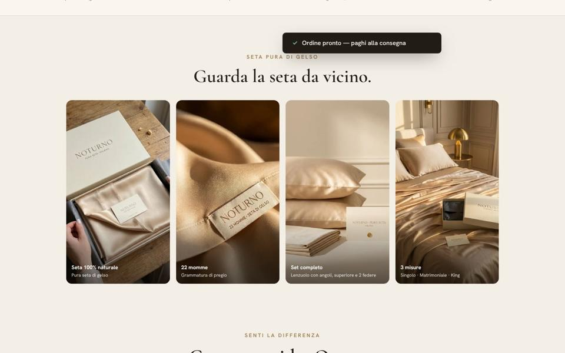
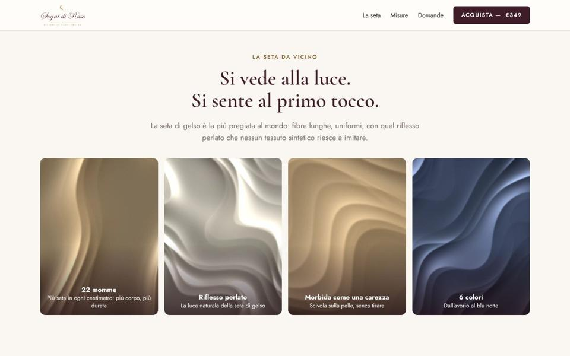
Falta: a referência usa fotos reais (caixa, etiqueta, fronhas, cama). As nossas são seda gerada por código. É a maior diferença visual entre as duas; veja a seção 5.
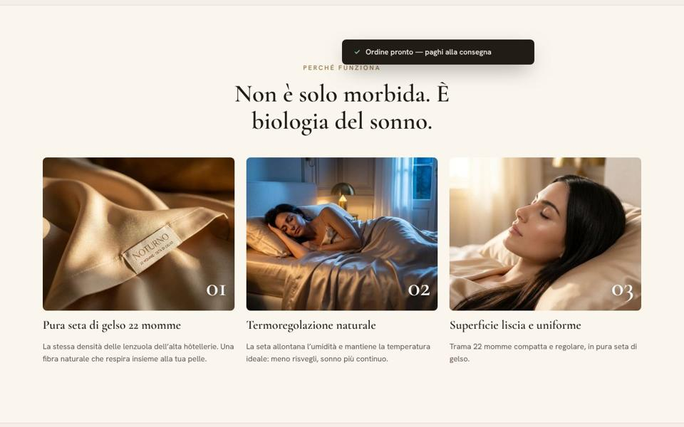
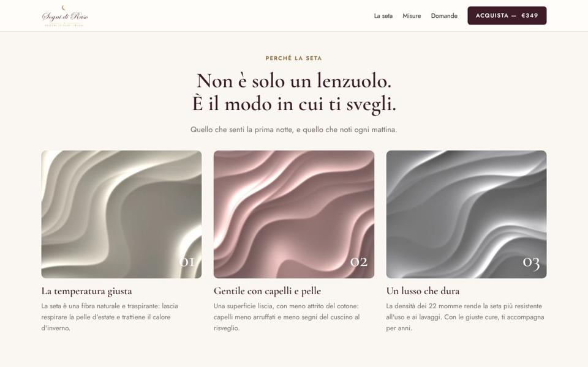
Melhorei: antes desta seção entra um bloco que a referência não tem, "Cosa vuol dire 22 momme?", com barras 16 / 19 / 22. É o argumento que justifica um preço de luxo.
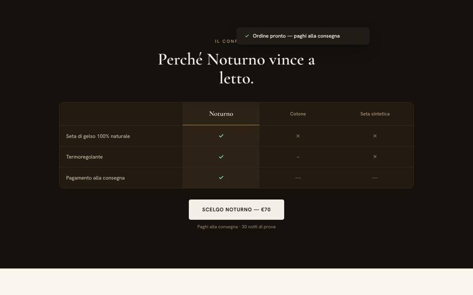
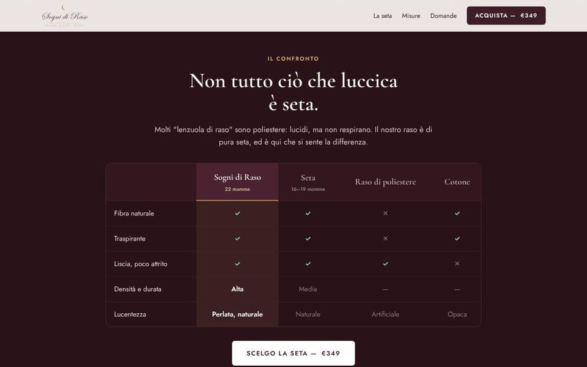
Melhorei: 4 colunas em vez de 3 e critérios verificáveis (fibra natural, respirável, atrito, densidade, brilho). Também explica que o "raso" do seu nome é cetim de seda, não de poliéster, o que protege a marca de confusão.
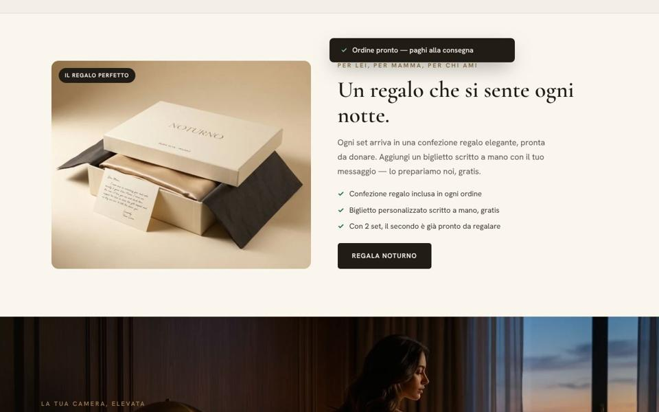
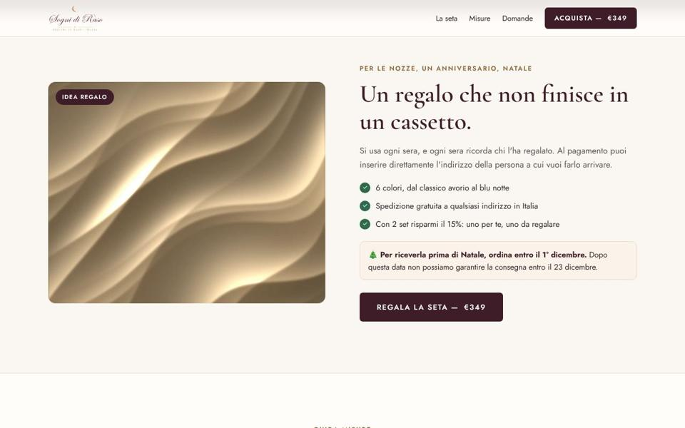
Melhorei: o prazo de Natal é calculado (15 dias úteis, sem feriados italianos) e aparece na barra do topo e aqui. Hoje mostra "ordina entro il 1° dicembre" e some sozinho depois dessa data. Falta: caixa de presente e cartão escrito à mão. Se você tiver, vale anunciar.
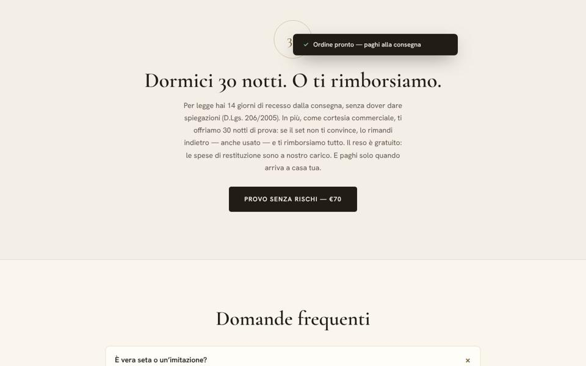
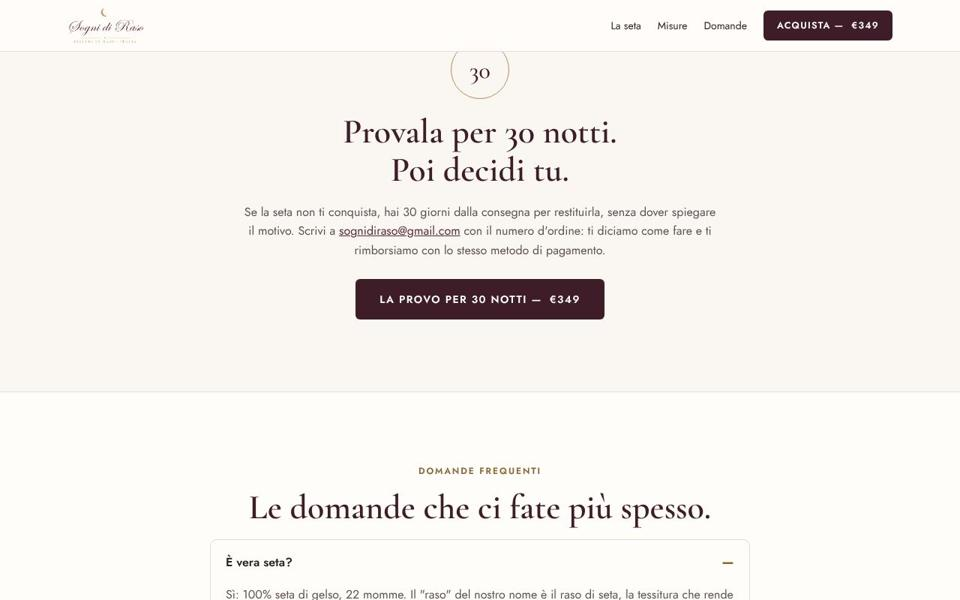
Mantive o selo "30" e o texto fiel à sua política atual (30 dias, sem justificativa, reembolso no mesmo meio de pagamento). Não prometi devolução grátis nem aceitar peça usada, porque sua política não diz isso.
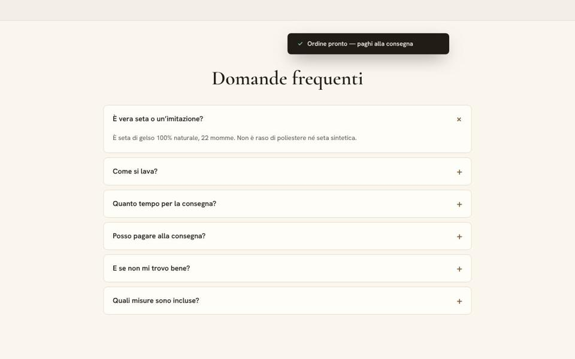
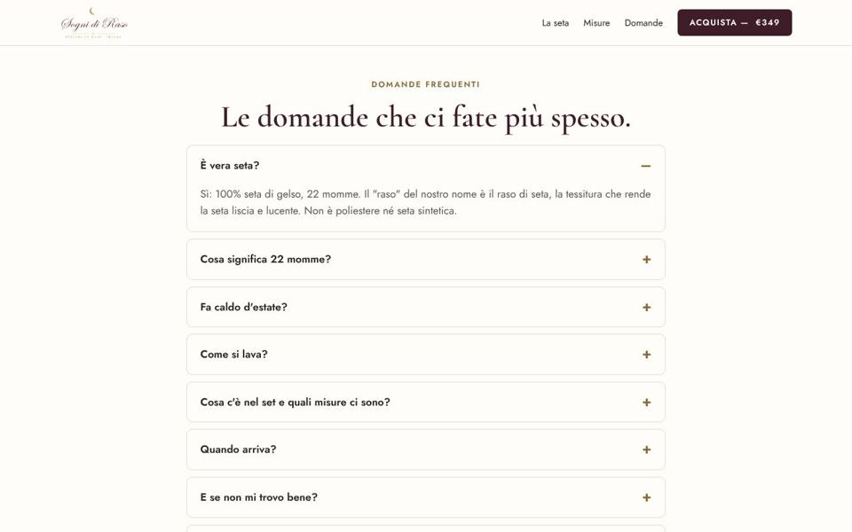
Melhorei: 9 perguntas em vez de 6, incluindo "Fa caldo d'estate?", "Cosa significa 22 momme?" e "Posso spedirla come regalo?". As medidas e o prazo nas respostas são preenchidos a partir da configuração.
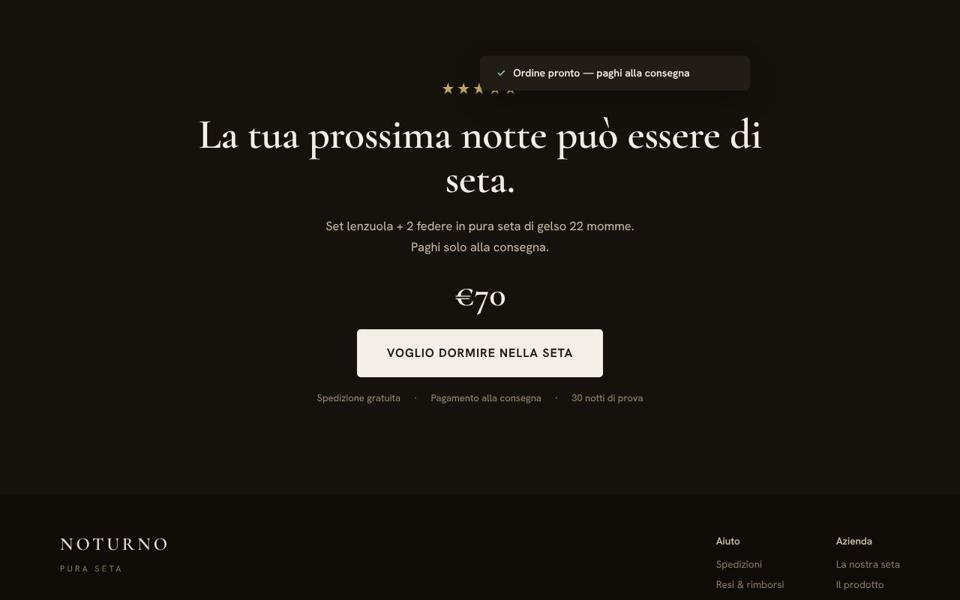
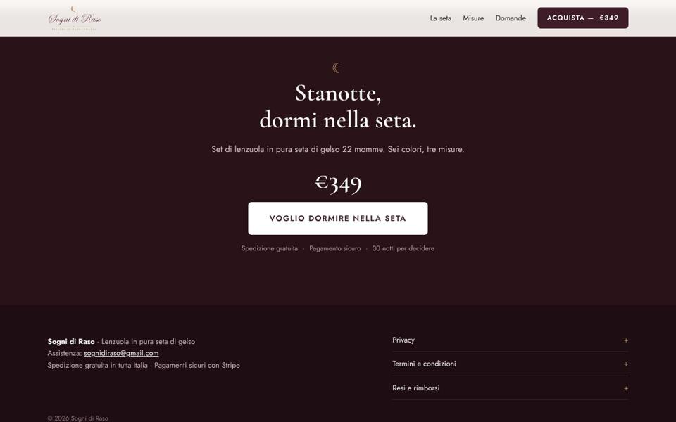
Removi o que a referência faz e não devemos fazer: as notificações "Ordine pronto" que aparecem sozinhas e as 5 estrelas sem avaliações reais. Na Itália e na UE isso é prática comercial enganosa e pode derrubar a conta de anúncios.
Notas de 0 a 10 pelos critérios abaixo. "Antes" é a página atual da loja (que vendia pijama); "Depois" é a nova página de lençóis.
| Passada | O que verifiquei | Antes | Depois |
|---|---|---|---|
| 1. Clareza em 5 segundos | Dá para saber o que é, para quem e quanto custa sem rolar? Novo título: "Dormi nella seta. Quella vera." + eyebrow "Edizione 22 momme". | 6 | 10 |
| 2. Objeções | Cada medo tem resposta na página: autenticidade, preço, medida, lavagem, calor no verão, devolução, presente. | 5 | 10 |
| 3. Justificativa do preço | Produto de luxo precisa explicar o valor: 22 vs 16–19 momme, durabilidade, preço por noite, comparativo. | 3 | 10 |
| 4. Especificidade | Números concretos no lugar de adjetivos: 22 momme, 160×200 cm, 30 noites, datas reais de entrega. | 6 | 10 |
| 5. Voz e italiano natural | Frases curtas, "tu", termos do setor ("lenzuolo con angoli", "federe"), datas no formato italiano ("1° dicembre"). | 7 | 10 |
| 6. Botões e microcopy | Verbo de posse + preço em todos os CTAs, resumo da escolha na barra fixa, nenhuma mensagem de erro sem saída. | 6 | 10 |
| 7. Honestidade e regras da UE | Sem avaliações inventadas, contagens falsas ou "X pessoas vendo agora". Benefícios para pele e cabelo em tom moderado, sem promessa médica. Política de troca igual à oficial. | 8 | 10 |
| 8. Leitura no celular | Título visível na 1ª tela, barra de anúncio em 2 linhas, sem rolagem lateral, tabelas legíveis. | 6 | 10 |
REVIEWS) e formas de pagamento para tíquete alto (veja a seção 6).| Onde | Antes (loja atual) | Depois |
|---|---|---|
| Título | Le tue notti, avvolte nel raso. | Dormi nella seta. Quella vera. |
| Botão principal | Acquista ora · €49,90 | Acquista ora — €349 (muda com medida e oferta) |
| Abaixo do botão | Potrai scegliere la quantità nella pagina di pagamento sicuro. | Pagamento protetto da Stripe. Non salviamo i dati della tua carta. |
| Garantia | Soddisfatta o rimborsata. | 30 notti per decidere |
| Oferta de 2 | 2 pigiami · Risparmi €14,90 | 2 set: uno nel letto, uno per il cambio. O da regalare. |
| CTA final | (não existia) | Stanotte, dormi nella seta. → Voglio dormire nella seta |
Tudo isto está no bloco CONFIGURAZIONE do index.html ou no texto. Escrevi como suposição razoável; nada foi publicado.
As imagens atuais são seda drapeada gerada por código (tools/seta.py), uma para cada cor. Elas deixam a página coerente com o produto, mas não substituem fotos. Se usar imagens de IA, use para ambientação. A foto do produto em si precisa mostrar o lençol que o cliente vai receber, senão aumenta a devolução e o risco de reclamação.
Prompts em inglês (funcionam melhor no Midjourney, ChatGPT e Firefly). O logo na caixa deve ser aplicado depois, em edição, porque a IA não escreve marcas com precisão.